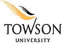

|  | Bare Machine Computing |
Faculty |
Bare Machine Computing (BMC) paradigm offers an alternative to the use of popular operating systems (OS) such as Windows and Linux. The BMC approach is based on running applications without any use of OS, kernel, mini/nano kernel, or any other centralized management system. These applications are application centric and require no other software or computing environment. The applications directly communicate with hardware and the BMC programmer is in total control of a given application. These applications are based on application object (AO) where an AO can be designed as a single module with a set of related end user applications. An AO is self-contained, self-managed, and self-executed entity. This approach differs from any conventional OS or kernel based systems in many ways as the execution knowledge and hardware abstraction is integrated in the AO.
Based on BMC approach, we have developed numerous AOs such as VoIP softphone, Web Server, Email Server, Email Client, Webmail Server, IPSec, TLS, and others. We have also demonstrated a set of applications constituting as a single AO with this architecture. It has been shown that BMC applications are simple, small in code size, easy to implement, scalable, and independent of any computing environments and software. More details on our work can be found at http://www.towson.edu/~karne. This website is primarily used to access Webmail from a Bare Webmail Server. Webmail
|
This work was initially funded by National Science Foundation SGER Grant by the late program director Frank Anger, and later through REU Grant. |
|
All rights reserved 2010 |
|